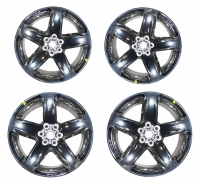

2013 SRT Viper Rattler 5-Spoke Polished Aluminum Wheel REAR
| Part number | 1WL88AAAAA |
|---|---|
| Fits years | 2013 |
| Models | Viper |
| Condition | Brand New |
| Category | Wheels |
Description
2013 SRT Viper Rattler 5-Spoke Polished Aluminum Wheel REAR
Wheels sold SEPERATLY
Picture for illustration ONLY
Mopar Part # 1WL88AAAAA
*BRAND NEW*
Factory five spoke wheel as seen on the 2013 SRT Viper. This gorgeous OEM wheel feature 19" rear wheels (19x13"). They are high grade aluminum polished and clear coated from the factory. Straight from Mopar, these are available to be shipped in 2 - 5 business days.
NOTE: While the rear wheels are identical in size to the 2003 - 2010 factory Viper rear wheel, the front wheels are 1/2 inch wider and have an outside offset of 20mm compared to the 1999 - 2010 factory wheel. They are the same exact bolt pattern so they will mount right up to every year Viper, but please measure carefully before purchasing as the fronts will stick out a bit more than the 1999 - 2010 front wheels. NO RETURNS once mounted and on your car.
NOTE: Shipping cost is for domestic only - international shipping is extra
Archived 2024-12-05 · view original capture
More in Wheels

 Out of stock
Out of stock Out of stock
Out of stock Out of stock
Out of stock